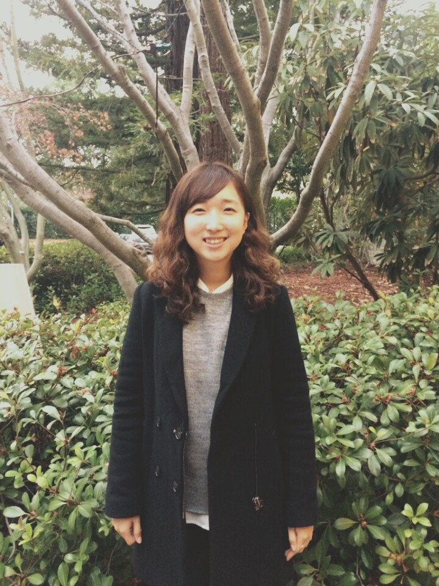

Hello my name is Gayoung Park
I am an Entrepreneur and Adventurer who likes to challenge myself and solve problems. I was previously Co-founder and CEO at Miisik (Fully Prepped Korean Meal Kit) and TasteHome (Marketplace for home meals).
I recently graduated from Babson College, having studied Entrepreneurship. My interests lie in the fields of IT technology, startups, problem solving, consumer tech, research, product management, and business development.
I am always looking for new learning opportunities wherein I can constantly learn to build better products, teams, and businesses that can create a huge value to society.